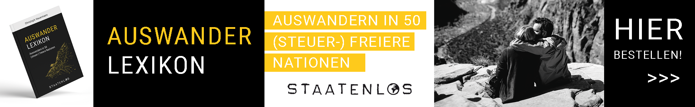

Nicht nur auswandern – erst einmal herausfinden, wo sich Leben wirklich gut anfühlt
Ein schönes Strandfoto reicht nicht, wenn man mehrere Monate an einem Ort leben möchte. Für einen echten Test zählen plötzlich andere Dinge: Ist die Gegend sicher? Gibt es vernünftige Ärzte? Funktioniert das Internet? Wie teuer ist eine Langzeitmiete? Ist der Ort im Sommer komplett überlaufen? Und fühlt sich der Alltag mit Kind entspannt an?
Deshalb vergleichen wir Europa nicht nach „Instagram-Faktor“, sondern nach zwölf praktischen Kriterien. Ein Land muss dabei nicht 12 von 12 Punkten erfüllen. Manche Orte sind starke Auswanderungskandidaten, andere interessante Reiseziele – und genau diese Unterscheidung ist wichtig.

Welches Land in Europa eignet sich zum Auswandern – wenn Meer, Ruhe und Remote Work wichtig sind?
Für genau dieses Prüfraster stechen vor allem Montenegro, Albanien, Kroatien und Bulgarien hervor, weil sie Meerzugang mit vergleichsweise kurzen Reisewegen aus Deutschland verbinden. Portugal ist infrastrukturell sehr stark, scheitert aber schneller am niedrigen Mietbudget. Nordmazedonien ist dagegen spannend für Ruhe und Kosten – hat aber kein Meer.
| Land | Budget | Sicherheit | Gesundheit | Meer / Baden | Remote | Unser erster Eindruck |
|---|---|---|---|---|---|---|
| Montenegro | gut außerhalb Hotspots | gut | mit Abstrichen | sehr passend | gut prüfbar | ⭐ sehr starker Testkandidat |
| Albanien | sehr interessant | gut mit normaler Vorsicht | deutliche Abstriche | sehr passend | gut in vielen Orten | ⭐ stark für Budget + Meer |
| Algarve | für 250–400 € schwierig | gut | gut | Atlantik, teils kräftiger | sehr gut | stark, aber teuer |
| Kroatien | stark ortsabhängig | sehr gut | gut | sehr passend | gut | sehr solide, Saison beachten |
| Bulgarien | interessant | gut | mit Abstrichen | Schwarzes Meer, Strömungen beachten | gut | guter Preis-Leistungs-Test |
| Nordmazedonien | sehr interessant | niedrige Kriminalität | Skopje besser als Regionen | kein Meer | gut prüfbar | stark für Ruhe, nicht für Meer |

 KI
Der Traum ist nicht „Urlaub für immer“ – sondern ein Alltag, der sich leichter anfühlt.
KI
Der Traum ist nicht „Urlaub für immer“ – sondern ein Alltag, der sich leichter anfühlt.
Wo kann man in Europa noch günstig am Meer leben?
Das Ziel von etwa 250 bis 400 Euro Langzeitmiete ist an beliebten europäischen Küsten inzwischen anspruchsvoll. Trotzdem gibt es noch Unterschiede. Besonders interessant sind kleinere Orte in Albanien, Bulgarien und Montenegro sowie einzelne günstigere Orte außerhalb der großen kroatischen Hotspots.

Montenegro
Adria, Berge, kleine Küstenorte und schnell erreichbares „weit weg“-Gefühl.
Die Lage gilt insgesamt als ruhig. Das Auswärtige Amt nennt vor allem Kleinkriminalität an touristischen Orten; Gewaltkriminalität richtet sich typischerweise nicht gegen Reisende.
Hier liegt der größte Haken: Versorgung und Ausstattung entsprechen laut Auswärtigem Amt nicht immer deutschem Standard. Für längere Aufenthalte ist private Absicherung besonders wichtig.
Ja – aber die bekannte Küste ist nicht mehr automatisch billig. Budva kann über dem Wunschbudget liegen; kleinere Orte wie Sutomore sind interessanter für Langzeitmieten.
Die Adriaküste passt grundsätzlich gut zu dem Wunsch nach klarem Wasser, kleinen Buchten und ruhigeren Küstenorten. Wind und Wetter müssen natürlich immer lokal beachtet werden.
In Städten und vielen Küstenorten ist Remote-Arbeit gut machbar. Für eine konkrete Wohnung trotzdem immer Festnetz, Mobilfunk und Stromsituation vor Vertragsabschluss testen.
Montenegro liegt in einer Erdbebenzone; im Sommer kommen Waldbrände vor. Im Hinterland gibt es außerdem giftige Schlangenarten – für Naturausflüge relevant, nicht als tägliches Küstenproblem.
Meer + Berge, kurze Distanz zu Deutschland, entspannte kleinere Orte, geringe Straßenkriminalität und viele Plätze abseits von Party-Hotspots.
Medizinische Versorgung schwächer als in Deutschland; bekannte Küstenorte werden im Sommer teuer und voll; Naturgefahren sind nicht null.
Mietorientierung: Numbeo meldet für Budva ca. 490 €* außerhalb des Zentrums; für Sutomore werden im Vergleich niedrigere Werte um 250 €* genannt. Crowdsourced Daten – keine Mietgarantie.
Albanien
Ionisches Meer, wilde Küsten, viel Natur und noch vergleichsweise starke Kaufkraft.
Die Lage ist insgesamt ruhig. Klein- und Straßenkriminalität kommt vor; an Stränden und in der Sommersaison sollte man besonders auf Wertsachen achten.
Die medizinische Versorgung entspricht laut Auswärtigem Amt nicht deutschem Standard. Bei ernsthaften Eingriffen und Langzeitaufenthalten ist das ein klarer Minuspunkt.
Außerhalb der teuersten Sommermonate kann Albanien weiterhin sehr interessant sein. Für Sarandë werden außerhalb des Zentrums deutlich niedrigere Mieten gemeldet als in vielen west- und südeuropäischen Küstenorten.
Wer kleine Orte, Berge direkt hinter der Küste und weniger „durchorganisierten“ Alltag mag, kann sich schnell verlieben. Gleichzeitig ist Infrastruktur regional ungleichmäßiger.
An der Küste mediterran. Sommer sind heiß; Waldbrände, Starkregen und Überschwemmungen können saisonal eine Rolle spielen.
An der Küste können saisonal durch Mücken oder Sandmücken übertragene Erkrankungen vorkommen. Guter Mückenschutz gehört deshalb zum praktischen Alltagstest.
Starkes Verhältnis aus Meer, Natur und Budget; schöne kleine Küstenorte; für mehrere Monate finanziell spannender als Algarve oder kroatische Hotspots.
Gesundheitsversorgung und Infrastruktur sind die deutlichsten Schwachstellen; Erdbeben, Waldbrände und saisonale Mückenrisiken müssen mitgedacht werden.
Sarandë: Numbeo meldet für eine kleine Wohnung außerhalb des Zentrums rund 31.500 ALL* pro Monat. Die reale Langzeitmiete hängt stark von Saison und Vertragsdauer ab.
Portugal / Algarve
Sonne, gute Infrastruktur und entspannter Küstenalltag – aber kein Low-Budget-Geheimtipp mehr.
Gewaltkriminalität ist selten. In touristischen Regionen ist Kleinkriminalität jedoch ein reales Thema – vor allem Taschendiebstahl, Autoaufbrüche und Einbrüche in Ferienunterkünfte.
Im Regelfall befriedigend bis gut, mit EHIC-Zugang zu dringend erforderlicher Behandlung im öffentlichen System. In ländlichen Regionen können Wege länger sein.
Eher nein. Aktuelle Mietdaten liegen für kleine Wohnungen in Faro deutlich über diesem Ziel. Portugal ist deshalb eher ein Komfort- als ein Budget-Favorit.
Wunderschön – aber Atlantik ist nicht gleich Lagune. Wellen, Brandung und Strömungen sind je nach Strand ein größeres Thema als an vielen Adriabuchten.
Sehr gut. Digitale Infrastruktur, internationale Community und Dienstleistungen machen die Algarve praktisch – allerdings mit entsprechend höherem Preisniveau.
Wald- und Vegetationsbrände sowie extreme Hitzephasen können im Sommer relevant sein. Im Herbst und Winter sind Stürme und Starkregen möglich.
Gute Gesundheitsversorgung, starke Infrastruktur, leichtes Ankommen, viel Sonne und europäischer Rechtsrahmen.
Das Mietbudget passt kaum noch; touristische Küstenorte können voll sein; Atlantik ist nicht immer das gewünschte ruhige Badewasser.
Faro: Numbeo meldet aktuell etwa 795 €* für eine kleine Wohnung außerhalb des Zentrums. Lagos liegt ebenfalls deutlich über dem 400-€-Ziel.
Kroatien
Sehr sichere Adriaküste, Inseln und gutes Alltagsgefühl – mit starkem Saison-Effekt.
Sehr stark: Das Auswärtige Amt beschreibt die Straßenkriminalität als sehr gering und Gewaltdelikte als selten. Kleinkriminalität konzentriert sich vor allem auf Touristengebiete.
Akute Behandlung ist mit EHIC im öffentlichen System möglich; zusätzlich gibt es vielerorts Gesundheitszentren und private Polikliniken.
In bekannten Orten nicht unbedingt. Split liegt deutlich über dem Wunschbudget. Kleinere Orte im Umland können aber erheblich günstiger sein – Kaštela ist ein Beispiel.
Sehr gut für klares Wasser und viele geschützte Buchten. Wer unbedingt weißen Sand sucht, muss genauer wählen: Viele Strände sind Kies, Fels oder kleine Buchten.
Ja – besonders außerhalb der ganz bekannten Hotspots und außerhalb von Juli/August. In der Hochsaison kann der Charakter vieler Küstenorte komplett kippen.
Kroatien liegt in einer seismisch aktiven Zone. Im Sommer treten regelmäßig Busch- und Waldbrände auf.
Sehr gute Sicherheitsbasis, wunderschöne Adria, gute Erreichbarkeit und solide medizinische Infrastruktur.
Hochsaison und Mietpreise in bekannten Küstenorten; viele Strände sind nicht sandig; im Sommer Waldbrandrisiko.
Split: Numbeo meldet außerhalb des Zentrums rund 640 €* für eine kleine Wohnung. Für kleinere Orte wie Kaštela werden deutlich niedrigere Werte gemeldet.
Bulgarien
Schwarzes Meer, niedrigere Kosten und gute Erreichbarkeit – interessanter als sein Image.
Die innenpolitische Lage gilt als stabil. Im Alltag geht es vor allem um typische Kleinkriminalität an touristischen und stark frequentierten Orten.
Ärzte an großen Krankenhäusern sind gut ausgebildet, aber Ausstattung und Versorgungsstandard sind regional nicht mit Deutschland vergleichbar. EHIC kann bei angeschlossenen staatlichen Stellen helfen.
Ja, besonders im Vergleich zu Algarve oder bekannten Adriastädten. Burgas und kleinere Orte können interessant sein; in touristischen Zonen schwankt die Saison stark.
Schöne breite Strände – aber das Auswärtige Amt warnt ausdrücklich vor gefährlichen Unterwasserströmungen, auch in Strandnähe. Rettungsschwimmer und Flaggen ernst nehmen.
Nein. Sommer können sehr angenehm und warm sein, Winter sind deutlich kälter als an der südlichen Adria oder Algarve.
Für digitale Arbeit grundsätzlich interessant. In Burgas, Varna und größeren Orten ist die Infrastruktur gut genug, die konkrete Unterkunft sollte trotzdem geprüft werden.
Gutes Verhältnis aus Kosten, Meer, Stadtinfrastruktur und erreichbarer Distanz zu Deutschland.
Winterklima, regionale Unterschiede bei der medizinischen Ausstattung und relevante Strömungen im Schwarzen Meer.
Aktuelle Numbeo-Vergleiche zeigen an Bulgariens Küste niedrigere Mietniveaus als in vielen west- und südeuropäischen Küstenregionen; Varna ist tendenziell teurer als Burgas.
Nordmazedonien
Sehr spannend für Slow Life und Budget – aber ohne Meer.
Die allgemeine Kriminalitätsrate wird vom Auswärtigen Amt als niedrig beschrieben. In Städten gibt es die üblichen Taschendiebstahl- und Autoaufbruchrisiken.
In Skopje ist sie in vielen Bereichen gut, aber nicht immer auf deutschem Standard. Außerhalb der Hauptstadt wird die Versorgung deutlich schwächer beschrieben.
Das ist eine der stärksten Seiten. Skopje ist deutlich günstiger als viele EU-Hauptstädte, und rund um Struga/Ohrid kann Langzeitwohnen sehr interessant sein.
Nein. Der Ohridsee ist landschaftlich wunderschön und kann ein starkes Slow-Life-Gefühl geben – erfüllt aber das eigentliche Kriterium „am Meer leben“ nicht.
Kontinental: sehr heiße Sommer, kalte und teilweise feuchte Winter. Wer ganzjährig mildes Küstenklima sucht, findet hier weniger.
Erdbeben- und Waldbrandrisiko sind vorhanden. Im Winter kann die Luftqualität in Skopje problematisch sein.
Sehr günstig, ruhig, niedrige Kriminalität und wunderschöne Natur rund um Ohrid und Struga.
Kein Meer; außerhalb Skopjes schwächere medizinische Versorgung; heißere Sommer und kältere Winter.
Struga und Skopje liegen bei Langzeitmieten deutlich unter vielen westeuropäischen Vergleichsorten. Lokale Angebote und Jahreszeit bleiben entscheidend.

Welche Länder in Europa eignen sich besonders für Remote Work?
Für Remote Work ist nicht das Land allein entscheidend, sondern die konkrete Adresse. Selbst in einem digital gut aufgestellten Land kann eine abgelegene Ferienwohnung schlechtes WLAN haben. Vor einer Langzeitbuchung würde ich deshalb immer einen Screenshot eines aktuellen Speedtests verlangen und zusätzlich prüfen, welcher Mobilfunkanbieter am Standort die beste Abdeckung hat.
Welches europäische Land eignet sich für ein ruhiges Leben mit Kind?
Für einen ersten mehrwöchigen oder mehrmonatigen Test würde ich Sicherheit, medizinische Erreichbarkeit und einen wirklich alltagstauglichen Ort höher gewichten als „möglichst spektakulär“. Kroatien und Portugal geben hier strukturell viel Sicherheit. Montenegro ist als Gesamtpaket sehr spannend, solange ein Ort mit guter Erreichbarkeit zu medizinischer Versorgung gewählt wird. Albanien kann finanziell und landschaftlich begeistern, verlangt aber mehr Eigenorganisation.
Schule und Bildung lassen wir in diesem ersten Artikel bewusst außen vor. Sobald ein Ort vom Testziel zum echten Auswanderungskandidaten wird, braucht er einen zweiten, strengeren Check.
Kann man mit ungefähr 2.000 Euro im Monat zu zweit gut in Europa leben?
Ja – aber nicht überall gleich gut. Die wichtigste Stellschraube ist die Miete. In Albanien, Bulgarien, Nordmazedonien und günstigeren Orten Montenegros ist ein Zwei-Personen-Budget von rund 2.000 Euro deutlich realistischer als an der Algarve oder in bekannten kroatischen Küstenstädten.
Wer nicht mitten im Hotspot wohnen muss, langfristig statt tageweise mietet und außerhalb der Hauptsaison sucht, verbessert die Chancen erheblich. Das eigentliche Ziel ist deshalb nicht „das billigste Land“, sondern der Ort mit der besten Kombination aus Miete + Sicherheit + Alltag + Internet + Meer.
 KI
Remote-tauglich ist ein Ort erst, wenn der Alltag funktioniert – nicht nur das WLAN im Café.
KI
Remote-tauglich ist ein Ort erst, wenn der Alltag funktioniert – nicht nur das WLAN im Café.
Unser Europa-Fazit: Nicht sofort auswandern – clever testen
Wenn wir diese sechs Ziele nur nach unserem Prüfraster ordnen, würde ich für die ersten Reisen nicht mit der teuersten oder exotischsten Option beginnen. Wir wollen herausfinden, wie sich ein echter Alltag anfühlt.
Nächster Schritt: Wenn eines dieser Länder im echten Aufenthalt überzeugt, prüfen wir es anschließend separat nach Visum/Aufenthaltsrecht, Schule, Krankenversicherung, Steuern und konkretem Langzeit-Mietmarkt.
Häufige Fragen zum Auswandern in Europa
Welches Land in Europa eignet sich zum Auswandern ans Meer?
Für ein ruhiges Leben am Meer sind je nach Budget besonders Montenegro, Albanien, Kroatien und Bulgarien interessant. Portugal bietet sehr gute Infrastruktur, ist an der Algarve aber deutlich teurer.
Wo kann man in Europa noch relativ günstig am Meer leben?
Teile Albaniens und Bulgariens sowie kleinere Orte in Montenegro gehören zu den interessanteren Kandidaten. Auch in Kroatien können kleinere Orte günstiger sein als die bekannten Küstenstädte.
Welches Land ist für Remote Work am unkompliziertesten?
Portugal und Kroatien sind infrastrukturell besonders bequem. In den günstigeren Balkanländern kann Remote Work ebenfalls sehr gut funktionieren, wenn die konkrete Unterkunft vorab auf Internet und Mobilfunk geprüft wird.
Wo ist es mit Kind besonders sicher?
Kroatien punktet mit sehr geringer Straßenkriminalität. Auch Nordmazedonien wird mit niedriger allgemeiner Kriminalitätsrate beschrieben. Für Familien zählt zusätzlich die Nähe zu medizinischer Versorgung.
Kann ich für 250 bis 400 Euro im Monat am Meer wohnen?
In touristischen Hotspots wird das schwierig. In kleineren Orten, bei Langzeitmiete und außerhalb der Hauptsaison kann das Ziel in Teilen Albaniens, Bulgariens und Montenegros noch erreichbar sein. Aktuelle lokale Angebote müssen immer separat geprüft werden.
Welches Ziel würden wir zuerst ausprobieren?
Montenegro. Es verbindet Meer, kurze Anreise, relativ hohe Alltagssicherheit und viele kleinere Küstenorte. Der wichtigste Punkt für einen längeren Aufenthalt wäre die Wahl eines Ortes mit guter medizinischer Erreichbarkeit.
Quellen & Datenhinweis
Stand der redaktionellen Prüfung: August 2026. Sicherheits-, Gesundheits- und Naturhinweise wurden mit den aktuellen Länderinformationen des Auswärtigen Amts abgeglichen. Mietwerte dienen nur als Orientierung und stammen teilweise aus crowdsourced Datenbanken; sie ersetzen keine aktuelle lokale Wohnungssuche.